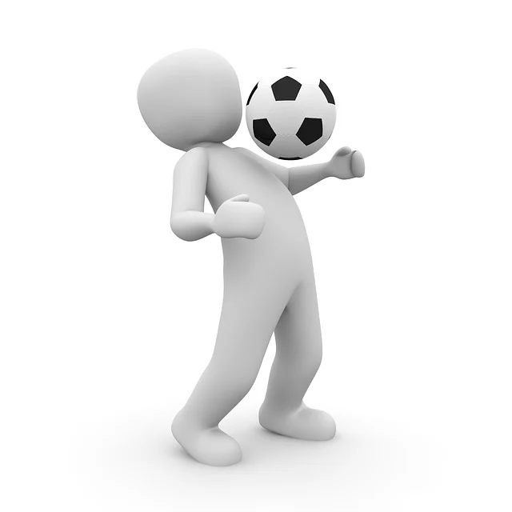
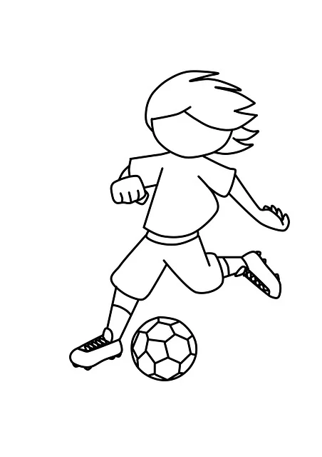

Exrcice 1
Premier Article
Voici mon premier article.
Exercice 2
Deuxiéme article
Voici mon deuxiéme article flex :
Exercice 3 :
Voici mon troisieme article :
Exercice 4 :
Voici une colonne
Voici deux colonnes
Voici trois colonnes
Exercice 5 :
Exercice 6 :
Exercice 7 :
Pour cette saison 2025-2026, la Commission Ethique et Citoyenneté lance une nouvelle opération qui vous permettra de nous présenter, si vous le souhaitez, une action de citoyenneté innovante et originale, menée au sein de votre club.
Les actions nationales existantes telles que :


sont des actions de privilège que nous vous encourageons à soutenir.
Mais il existe aussi de nombreuses autres causes, plus méconnues et tout autant utiles, qui ont besoin de soutien et que nous souhaitons mettre en lumière :
Les thématiques sélectionnées sont les suivantes :


Vous pourrez nous présenter votre action tout au long de l’année avec une date butoir au 15 Mai 2026, date à laquelle, nous étudierons les différentes propositions afin de sélectionner celle(s) qui a (ont) retenu notre attention.
La ou les action(s) retenue(s) fera (feront) l’objet d’une mise en valeur et le ou les club(s) sera (seront) récompensé(s) pour son (leurs) initiative(s) originale(s).
Pour ce faire, nous vous joignons une fiche à compléter à laquelle vous devrez joindre des justificatifs (photos, video…) attestant de la réalisation de l’action.
En espérant que vous accepterez de vous mobiliser pour cette opération qui tient à cœur à l’ensemble de la commission.

La FFF en partenariat avec le Crédit Agricole, NIKE & Intermarché est fière d’annoncer la
quatrième édition du dispositif

Après une saison 3 réussie, comptant plus de 1400 projets déposés par les clubs et les instances, la FFF compte sur votre engagement pour cet appel à projet visant à développer la pratique féminine, renforcer la place des femmes dans le football et dynamiser le projet club dans toutes ses dimensions !

COMMENT S’INSCRIRE ?
Comme l'année dernière, toute la démarche d'inscription pour les instances se fera sur Portail Bleu > Développer des clubs > Toutes Foot (L’utilisateur doit être habilité par le référent informatique de la Ligue). Une affiche personnalisable ainsi que tous les visuels de communication vous attendent également sur la plateforme TOUTESFOOT.
Découvrez les lauréats de l’année dernière